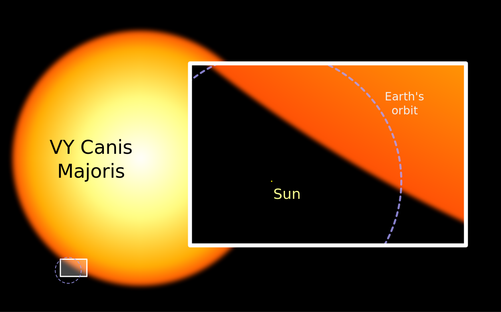
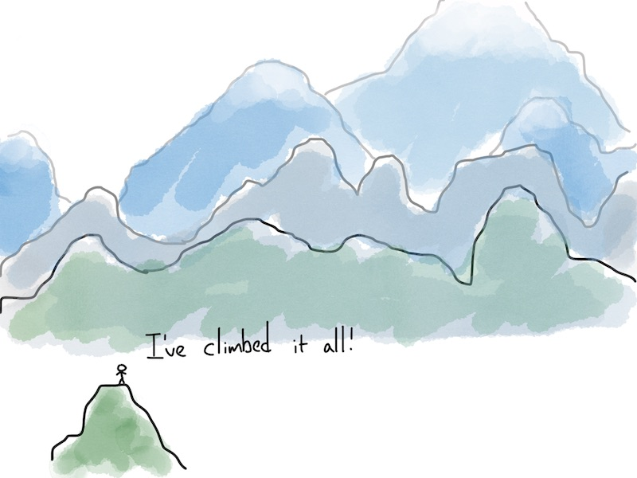

by yours truly
Anonymous in the IT crowd
thank you Jarek
We’re the crowd, we’re anonymous,
There’s always a mountain of things to learn,
The learning process, it must be continuous,
(New Java version now comes twice a year)
Must we so suffer? When does it end?
Till death do us part? Till we croak and break?
DDD? BDD? Docker? What else?
(I hear that AI is an ascending trend)
But were we to happen upon a wishing well,
A genie, a goldfish, you know now the tale,
Then I think I know what we would’ve said:
Stop that vicious cycle, that unending hell
of new versions, new frameworks, new paradigms
new ecosystems, new crackers' attacks,
new changes in AWS, Azure, new cloud,
new languages, new tools or new updates that
like Intellij’s, every quarter now
make me wonder what’ll break this time?
The list does go on, but you know IT now,
The question is where YOU fit in my friend,
What’s your learning path and how
It shall bring you pleasure with a bit of pain
To push you forward, to 'skilled' not experienced,
To broaden your deadly comfort zone
So that - when faced with the unexpected -
you’re able to challenge it as well as bemoan
Nowadays education systems teach passivity,
That’s perfect for killing your curiosity,
Who’s in charge of your learning? Your manager or you?
Does your job tell you to eat or sleep too?
RPGs are great because it’s up to you,
Where to put your skill points or max attributes
IRL you should be doing this too
Play the long game - and that means: YOU CHOOSE.
Where are your Shu-Ha-Ris, what’s your T composed of,
Have you codified your knowledge, where’s the bazaar you work on,
What are you curious of, where your masteries lie,
'Tis about your buccaneer-scholar path.
Galaxies far, far away

Will you wait?
for a meteor or a supernova?
to end the Flash "galaxy",
or applets or CORBA "planets",
or Java EE / app server "solar system" or …?
jump planets / systems / galaxies, even if just for fun
Advice
plan your learning in advance - you choose
learn enough to jump ship if needed
learn enough to use the good bits from other places
Yet Another
Of your own work: A humorous allusion often used in titles to acknowledge that the topic is not original, though the content is.
Of others' work: Describes something of which there are already far too many.
http://catb.org/jargon/html/Y/Yet-Another.html
— Jargon file
— Jargon file
Starter?
- yacc
yet another compiler-compiler (a UNIX parser-generator)
Web servers - my first YA
- YAWS
YA Web Server (an Erlang web-server)
Apache / IIS, Tomcat, TomEE, Nginx
Undertow, Jetty, Netty*, VertX*, NodeJS*, YAWS, Mochiweb, Mongrel, Passenger*…
- YARN
YA Resource Negotiator (Hadoop)
- Yandex
YA indexer (a search engine / indexer)
Recent annoyance
- YAML
YA Markup Language → YAML Ain’t Markup Language
- YAJSW
YA Java Service Wrapper
Pleased to annoyed
at first you’re pleased
then you’re feeling reluctant, annoyed
then you wonder "why it’s better than X"
then you avoid and rationalize
Advice
positive restraint - learn one, but well
learn one among many, then apply to others when needed
you do your Yet Another to learn it
by doing
and to codify the knowledge
A GEF training story
email in November
call in February
training in August
forgotten in November
- GEF
Graphical Editing Framework by Eclipse Foundation
We forget things
we don’t use
we don’t like
we didn’t really made ours
Your brain’s "you get it" trap
GEF training was forgotten in mere 2 months
but is it really a trap?
did I made that knowledge mine?
So far, this year I dabbled in
Java 12-15, Python 3, Flask+Jinja (Python), SQLite, few microframeworks like Spark (Java)
Conflict resolution, boosting team initiative, leading by stepping away, microexpressions, learning and teaching
Remote everything (tools, practices, interaction); COVID-related stuff (epidemiology, viruses, WHO’s inner workings),
Local events, geopolitics, gender
Poetry (you’ve experienced that one yourself), songs, Tolkien’s Arda, …
What will I forget?
Re-learning
is key in this century. It’s not about reading and writing now, it’s about re-learning.
What helps?
everything’s a narrative, stories, alegories
make a base of resources for deeper learning and re-learning
devise practice: examples repo, doctest, experiment!
blog to not forget, use personal wiki, mind-map, write
alternate: learn - do - learn - …
set aside some time: TO WASTE IT!
| teach |
Codify your knowledge
when you’re at your local peak
apprentice has 'proof of mastery'
master tools
master work
to get back to, to "jump in" again
what’s interesting - follow your curiosity
following the experts - mimicry, skill-stealing, mentoring

Advanced beginner’s perspective. Credits: Eugene Yan
To Do!
Deliberate practice
Beginner’s mind!
Where senior says no way, send in a junior!
Find your experts to follow and steal from
Read deliberately, selectively, continuously
drop what doesn’t work / interest you
Events
JAlba, JCrete, Devoxx BE, Code 1, Strange Loop…
Google JAM / Summer of Code / AI, Challenge 24 for more
Codility, TopCoder, Project Euler, SPOJ, Hackerrank, dozens of others
also a great entry to competitive programming
Certifications
Not bad! Some of them are really well structured and pass the well-chosen knowledge!
Some formely famous 'transformed' into pure business now (with steps like associate programmer or business engineer)
SCKRK
Guide: Writing Testable Code
The CAP Theorem
MapReduce
Working Effectively with Legacy Code
Fallacies of Distributed Computing Explained
| Software Crafstmanship Kraków is now remote! Also, see Papers we Love |
Technical and algorithmic
Memory Barriers
One VM To Rule Them All
Conflict-free Replicated Data Types
Hierarchical Temporal Memory
B-Queue
BitCoin
Or from software engineering
Domain Driven Design Quickly
DDD Sagas
Mock Roles not Objects
Out of the Tar Pit
Distributed programming
Life beyond Distributed Transactions
Warp: Lightweight Multi-Key Transactions…
Access Path Selection in a RDBMS
Differential Synchronization
BASE - an ACID alternative 2PC ACID CAP
A Note on Distributed Computing
Raft
The Paxos Saga
Time, Clocks and the Ordering of Events in a Distributed System
Reaching Agreement in the Presence of Faults
The Byzantine Generals Problem
FLP Impossibility Result
The Part-Time Parliament
Paxos Made Simple (… and 7 more)
Advice
read deliberately and voraciously
find (conferences, other events) people to learn from and mimic
practice your skills: not naively, but deliberately
Summarizing
architects have their buildings, bridges, famous designs
bad bridge falls - architect falls with it
programmer hangs with his program? :P
we have no fame - build your rep!
fame comes from our skills
be another Torvalds!
Every good project
starts from a personal itch
(paraphrased from CatB)
Books
Cathedral and the Bazaar - E.S. Raymond
Secrets of a Buccaneer-Scholar - James Bach
Peak - Anders Ericsson, Robert Pool
Pragmatic Thinking and Learning - Andy Hunt
| remember other green slides! |
Questions?